レポートなどでグラフを描かなければいけないことは良くあります。データや関数のグラフを作成するには、以下のコマンドが使えます。
| グラフ作成ツール | |
|---|---|
| gtkgraph | シンプルなグラフ作成ツール |
| geg | 複数のグラフを重ねて描けるグラフ作成ツール |
| ngraph | 日本人が作ったグラフ作成ツール |
| gnuplot | 大御所 |
それぞれに特徴があるのですが、ここでは一番機能が豊富だと思われる gnuplot を使ってみます。
ターミナルのウィンドウを開いて、gnuplot コマンドを実行してください。
| gnuplot を起動する |
|---|
% gnuplot[Enter] |
gnuplot は起動すると次のメッセージを出した後、"gnuplot>" というプロンプトを出してコマンドの入力を待ちます。
| gnuplot の起動メッセージ |
|---|
G N U P L O T
Linux version 3.7
patchlevel 1 (+1.2.0 2001/01/11)
last modified Fri Oct 22 18:00:00 BST 1999
Copyright(C) 1986 - 1993, 1998, 1999
Thomas Williams, Colin Kelley and many others
Type `help` to access the on-line reference manual
The gnuplot FAQ is available from
<http://www.ucc.ie/gnuplot/gnuplot-faq.html>
Send comments and requests for help to <info-gnuplot@dartmouth.edu>
Send bugs, suggestions and mods to <bug-gnuplot@dartmouth.edu>
Terminal type set to 'x11'
gnuplot>
|
試しに y=x2のグラフを描いてみましょう。plot コマンドに続けて x の関数 f(x) を書きます。
| y=x2のグラフを描く |
|---|
gnuplot> plot x*x[Enter] |
三角関数も描けます。
| sin(x) のグラフを描く |
|---|
gnuplot> plot sin(x)[Enter] |
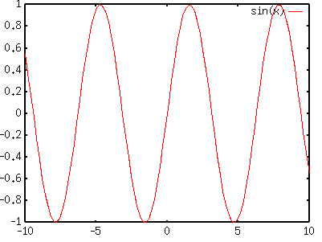
値の範囲は [最小値:最大値] で指定します。pi はπ (3.141592・・・) を表します。
| -π～πの範囲で sin(x) のグラフを描く |
|---|
gnuplot> plot [-pi:pi] sin(x)[Enter] |
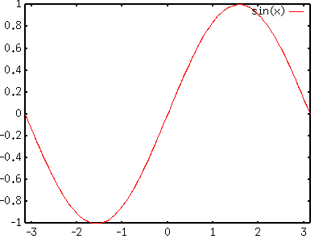
| 値の上限と下限を指定する |
|---|
gnuplot> plot [-pi:pi] [-2:2] sin(x)[Enter] |

複雑な関数でも描くことができます。
| 複雑な関数のグラフを描く |
|---|
gnuplot> plot [-pi:pi] [-2:2] sin(x*x)+cos(4*x)[Enter] |

splot コマンドを使えば、３次元のグラフを描くこともできます。splot コマンドに続けて f(x,y) 形式の関数を指定します。
| ３次元のグラフを描く |
|---|
gnuplot> splot exp(-x*x-y*y)[Enter] |

実験などで得られたデータは、そのままでは単なる数値の羅列に過ぎません。それらを目に見える形にして、はじめて解釈や分析を行うことができます。いま、次のようなデータがあったとします。
| 離散データ |
|---|
4165 2155 1776 1127 236 346 313 478 850 2657 10432 13757 9305 7289 8970 10496 9519 5334 4883 3566 3785 4205 6316 5121 |
上のデータをダウンロードするには、[Shift] キーを押しながら、ここをマウスの左ボタンでクリックしてください。data1.txt というファイル名で保存されます。
このデータのグラフを描くには、plot コマンドに "～" でくくってファイル名を指定します。
| 離散データのグラフを描く |
|---|
gnuplot> plot "data1.txt"[Enter] |
data1.txt には一つのデータの並び（欄）しかありませんから、何行目のデータなのかが横軸になります。

グラフを線で結ぶには、with lines を指定します。
| 折れ線グラフを描く |
|---|
gnuplot> plot "data1.txt" with lines[Enter] |

棒グラフを描くには、with boxes を指定します。
| 棒グラフを描く |
|---|
gnuplot> plot "data1.txt" with boxes[Enter] |

ただし、このままだと横軸がずれてしまうので、横軸の範囲を指定します。
| 棒グラフを描く |
|---|
gnuplot> plot [-1:24] "data1.txt" with boxes[Enter] |
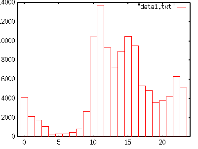
もし、データに複数の欄があれば、一つ目のデータが横軸、二つ目のデータが縦軸になります。
| ２次元データ |
|---|
4165 29329.3 2155 14243.9 1776 9087.7 1127 6980.54 236 665.639 346 1723.1 313 873.139 478 2463.78 850 3531.96 2657 25978.9 10432 61518.2 13757 91962.7 9305 53341.5 7289 48685.0 8970 60858.3 10496 73180.3 9519 68276.7 5334 39095.3 4883 43886.0 3566 27799.9 3785 42597.1 4205 29211.1 6316 36928.9 5121 42233.2 |
上のデータをダウンロードするには、[Shift] キーを押しながら、ここをマウスの左ボタンでクリックしてください。data2.txt というファイル名で保存されます。これにより散布図を描くことができます。
| ２次元データのグラフを描く |
|---|
gnuplot> plot "data2.txt"[Enter] |
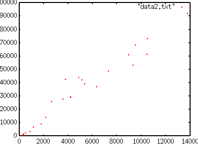
しかし、このデータは横軸（第１欄）の値が大きさの順に並んでいないので、折れ線グラフにするとむちゃくちゃになってしまいます。
| 折れ線グラフを描く |
|---|
gnuplot> plot "data2.txt" with lines[Enter] |

with lines はデータの順に線を引きます。このようなデータにおいてグラフを滑らかに結ぶには、後で述べる補間を用います。
２次元のグラフを描く場合、データに３つ以上の欄があっても、最初の２つの欄しか使用されません。。
| ３つの欄を持つデータ |
|---|
4165 29329.3 7.04185 2155 14243.9 6.6097 1776 9087.7 5.11695 1127 6980.54 6.19391 236 665.639 2.8205 346 1723.1 4.98006 313 873.139 2.78958 478 2463.78 5.15435 850 3531.96 4.15525 2657 25978.9 9.77753 10432 61518.2 5.89707 13757 91962.7 6.68479 9305 53341.5 5.73256 7289 48685.0 6.67924 8970 60858.3 6.78465 10496 73180.3 6.97221 9519 68276.7 7.17268 5334 39095.3 7.32945 4883 43886.0 8.98751 3566 27799.9 7.79582 3785 42597.1 11.2542 4205 29211.1 6.94675 6316 36928.9 5.84688 5121 42233.2 8.24706 |
このデータをダウンロードするには、[Shift] キーを押しながら、ここをマウスの左ボタンでクリックしてください。data3.txt というファイル名で保存されます。
| ３つの欄を持つデータのグラフを描く |
|---|
gnuplot> plot "data3.txt"[Enter] |
この場合、１つ目の欄を横軸の値、２つ目の欄を縦軸の値としてグラフを描きます。このデータの最初の２つの欄は data2.txt と同じです。
グラフを描く欄を using で指定すれば、任意の欄のグラフを描くことができます。３つ目の欄を描く場合は using 3 とします。
| ３つ目の欄のデータのグラフを描く |
|---|
gnuplot> plot "data3.txt" using 3[Enter] |

この場合はデータが何行目にあるのかが横軸に使われますから、with lines を付けて折れ線グラフを描くことができます。
| ３つ目の欄のデータの折れ線グラフを描く |
|---|
gnuplot> plot "data3.txt" using 3 with lines[Enter] |
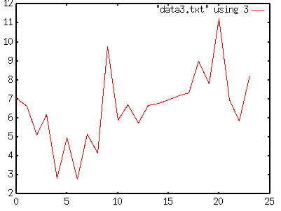
２つ目の欄を横軸、３つ目の欄を縦軸にするには、using 2:3 とします。
| ２つ目の欄と３つ目の欄を使って散布図を描く |
|---|
gnuplot> plot "data3.txt" using 2:3[Enter] |

ただし、この場合は横軸の値に使う２行目のデータが大きさの順に並んでいなければ、折れ線グラフなどは乱れます。。
| ２つ目の欄と３つ目の欄を使って折れ線グラフを描く |
|---|
gnuplot> plot "data3.txt" using 2:3 with lines[Enter] |

この場合もグラフを滑らかに結ぶには、次節で述べる補間を用います。
グラフを描く際にデータの補間を行うことができます。補間の方式には smooth unique（線形補間）、smooth cspline（スプライン補間）、smooth acspline（重みつきスプライン補間）および smooth bezier、smooth sbezier（ベジェ曲線）があります。
smooth unique を指定すれば、データ間を線形補間します。with lines がすべての点をテー他の順に結ぶのに対し、smooth unique は横軸の値の大きさの順に点を結びます。横軸の値が同じ点が２つ以上あれば、縦軸の値としてそれらの平均値を使います。
| 線形補間 |
|---|
gnuplot> plot "data3.txt" using 2:3 smooth unique[Enter] |
これは前節のグラフと同じデータです。

smooth cspline を指定すれば、データ間を３次スプライン (cubic spline) 曲線で補間します。曲線はすべての点を通ります。data3.txt の三番目の欄のデータのグラフは次のようになります。
| スプライン補間 |
|---|
gnuplot> plot "data3.txt" using 3 smooth cspline[Enter] |
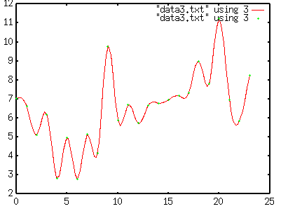
smooth cspline によるスプライン補間ではすべての点を通るように曲線を描くので、誤差を含む測定データなどではかえって曲線が乱れます。そのような場合は smooth acspline を使います。各点の重み（その点の位置に引っ張られる強さ）は、各点のデータごとに３つ目のデータとして追加するか、using を使って指定します。下の例はデータのある行の番号を横軸に、３つ目の欄を縦軸に使い、すべての点の重みとして 100 を指定します。
| 重みつきスプライン補間 |
|---|
gnuplot> plot "data3.txt" using :3:(100) smooth acspline[Enter] |
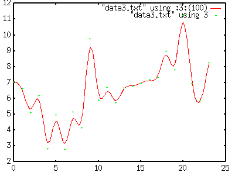
重みを小さくすると、データの点から離れていきます。同じデータで重みを１にすると、次のようなグラフになります。
| 重みつきスプライン補間の重みを小さくした場合 |
|---|
gnuplot> plot "data3.txt" using :3:(1) smooth acspline[Enter] |
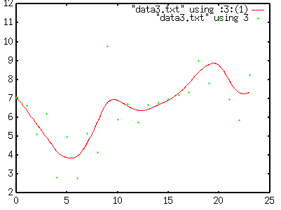
ベジェ曲線は Illustrator などの作図ソフトウェアなどで使用される曲線です。データの各点はベジェ曲線の制御点として扱われます。smooth bezier はデータを順に制御点として使うのに対し、smooth sbezier はデータを横軸の値の順に並べ替えてから制御点として使います。
| ベジェ曲線 |
|---|
gnuplot> plot "data3.txt" using 3 smooth bezier[Enter] |

しかし、bezier はデータが大きさの順に並んでいないとくしゃくしゃになります。
| ベジェ曲線 |
|---|
gnuplot> plot "data3.txt" using 2:3 smooth bezier[Enter] |
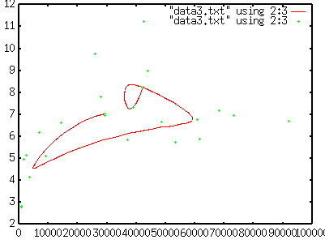
sbezier ならデータが順に並んでいなくても滑らかに線を引くことができます。
| ベジェ曲線 |
|---|
gnuplot> plot "data3.txt" using 2:3 smooth sbezier[Enter] |
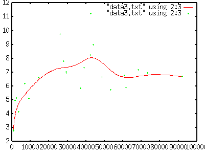
plot コマンドにコンマで区切ってデータを複数指定すれば、それらのグラフを重ねて表示することができます。例えば上のベジェ曲線のグラフに重ねて同じデータを点で描くには、次のようにします。
| グラフの重ね合わせ |
|---|
gnuplot> plot "data2.txt" smooth sbezier, "data2.txt"[Enter] |

もちろん、２つ目のグラフを折れ線グラフにしたり、補間することもできます。
| グラフの重ね合わせ |
|---|
gnuplot> plot "data2.txt" smooth sbezier, "data2.txt" smooth unique[Enter] |
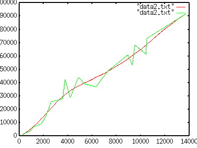
作成したグラフを印刷したり、別のソフトウェアで利用したりするには、グラフをファイルに保存します。最初に set terminal コマンドを使って出力方法を指定します。set terminal コマンドだけを入力すれば、出力方法の一覧が表示されます。
| 出力方法の一覧 |
|---|
gnuplot> set terminal[Enter] |
プリンタに印刷できる形式でグラフを出力するには、set terminal コマンドで postscript を指定します。
| PostScript 形式で出力 |
|---|
gnuplot> set terminal postscript[Enter] |
次に、set output コマンドで出力するファイル名を指定します。ファイル名は "～" でくくります。ここでは graph.ps というファイルを作成するものとします。
| 出力ファイル名の指定 |
|---|
gnuplot> set output "graph.ps"[Enter] |
ここでもう一度 plot コマンドでグラフを描きます。replot コマンドを使えば、直前に描いたものと同じグラフをもう一度描くことができます。
| 出力ファイル名の指定 |
|---|
gnuplot> replot[Enter] |
replot を何度も実行したり、plot コマンドで別のグラフを出力したりすると、ファイルにグラフを重ね書きしてしまいます。一度グラフを出力したら、そのたびに set output コマンドで別のファイル名を指定するか、ファイル名を指定せずに set output コマンドを実行して下さい。
これでカレントディレクトリに graph.ps というファイルができているはずです。ターミナルのウィンドウをもう一つ開いて、ls コマンドで確認してみてください。PostScript 形式のデータは、gv コマンドで画面表示できます。シェルで gv コマンドを使って、graph.ps を見てみてください。
| PostScript ファイルを画面表示する |
|---|
% gv graph.ps[Enter] |
演習室のプリンタは、PostScript 形式のファイルを直接印刷することができます。なお、gv からも印刷することができます。
| PostScript ファイルを印刷する |
|---|
% lpr graph.ps[Enter] |
この授業の１３回目に、LaTeX というシステムを使って文書の浄書を行います。LaTeX において文書中に図を埋め込む方法の一つに、EPS 形式のファイルを使用するものがあります。その形式でグラフを出力します。EPS は Encapsulated （他の PostScript ファイルに埋め込めるようにカプセル化された） PostScript です。
| EPS 形式で出力 |
|---|
gnuplot> set terminal postscript eps[Enter] gnuplot> set output "graph.eps"[Enter] gnuplot> replot[Enter] gnuplot> set output[Enter] |
EPS 形式のファイルも gv で画面表示できます。
| PostScript ファイルを画面表示する |
|---|
% gv graph.eps[Enter] |
Tgif は Unix や Linux で良く使われる作図ソフトウェアです。gnuplot で作成したグラフを Tgif 形式で出力すれば、Tgif を使ってそのグラフを編集できます。出力するファイルのファイル名には、必ず .obj という拡張子を付けて置いてください。
| Tgif 形式で出力 |
|---|
gnuplot> set terminal tgif[Enter] gnuplot> set output "graph.obj"[Enter] gnuplot> replot[Enter] gnuplot> set output[Enter] |
出力された graph.obj というファイルは、tgif コマンドで開くことができます。引数にはファイル名を指定しますが、拡張子の .obj は省略できます。
| Tgif を使ってグラフを編集する |
|---|
% tgif graph[Enter] |
このほか、Macintosh や Windows でよく使用される作図ソフトウェアの Illustrator 形式や、Web の画像データとして使用される PNG 形式などでも出力することができます。
図やイラストを描くためのツールとしては Adobe 社の Illustrator が有名ですが、６階の演習室の Linux では以下のものが使えます。
| グラフ作成ツール | |
|---|---|
| sodiposi | SVG 形式のサブセットを作成できる。日本人が作っているらしい。 |
| Tgif | 「図面」みたいなものが書きやすい、日本語対応。 |
ここでは Tgif を使って作図をしてみます。Tgif を使うと他の授業で Illustrator を使うときに混乱するかもしれませんが、レポートや論文などで説明図やチャート図を描くときには、Illustrator よりも簡単に使えると思います。描いた図はプリンタに印刷する以外に、PostScript 形式やPDF 形式（次回説明します）でも保存できます。
ターミナルのウィンドウで tgif コマンドを実行してください。
| Tgif の起動 |
|---|
% tgif[Enter] |
Tgif は起動すると次のメッセージを出した後、作図のウィンドウを開きます。
| Tgif の起動メッセージ |
|---|
Tgif Version 4.1 (patchlevel 41 - QPL) Copyright (C) 2001, William Chia-Wei Cheng (bill.cheng@acm.org) Warning: No type converter registered for 'String' to 'Bitmap' conversion. |
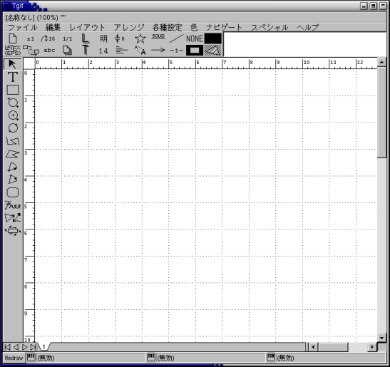
マウスの各ボタンをクリックしたとき動作の動作は、作図エリアの下に常に表示されています。作図エリアの周りの絵記号にマウスを移動すれば、その絵記号をクリックしたときの動作が表示されます。
作図エリアの左に縦に並んでいる絵記号のうち、「Ｔ」～「Free」までのものが作図に使う図形の要素です。このうちのどれかを選択し、作図エリアの上にある図形の属性を選択してから、図形を描きます。
作図エリアの左に並んでいる絵記号のうち一番上の矢印を選び、そのあと図形をクリックしてください。図形の周りに小さな黒い四角が現れます。これをハンドルと呼びます。これで図形が選択されたことになります。
図形の選択後、その図形のハンドル以外の部分をドラッグすれば、図形が移動できます。またハンドル部分をドラッグすれば、図形の拡大縮小ができます。
折れ線や多角形のここの頂点の位置を変更するには、作図エリアの左に並んでいる絵記号のうち一番上の矢印を選び、図形をダブルクリックしてください。その後、頂点のところにあるハンドルを移動してください。
作図エリアの左に並んでいる絵記号のうち一番下の渦巻きみたいな絵記号を選び、図形を選択してください。その後マウスをドラッグすれば、図形を回転したり変形したりすることができます。
Ctrl-S をタイプして、ファイル名を指定してください。
図を保存した後、作図エリアの左上（選択用の矢印の真上）にある絵記号の中から出力方法を選び、Ctrl-P をタイプしてください。保存したファイル名に適当な拡張子を付けてファイルを出力します。プリンタの絵記号を選んだときは、直接プリンタに印刷します。
この授業の第８回にある下の図を Tgif で描いてみよ（まったく同一である必要はない）。ファイル名は pyramid.obj とし、図中に自分の学籍番号と氏名を書き込んでおくこと。